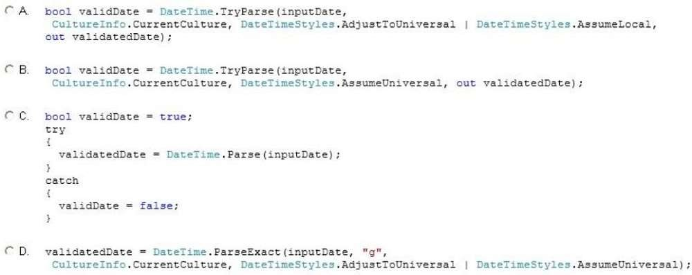

|
You are developing an application that accepts the input of dates from the user. Users enter the date in their local format. The date entered by the user is stored in a string variable named inputDate. The valid date value must be placed in a DateTime variable named validatedDate. You need to validate the entered date and convert it to Coordinated Universal Time (UTC). The code must not cause an exception to be thrown. Which code segment should you use?  A. Option A B. Option B C. Option C D. Option D Correct Answer: A Section: Volume A Explanation Explanation/Reference: Explanation: AdjustToUniversal parses s and, if necessary, converts it to UTC. Note: The DateTime.TryParse method converts the specified string representation of a date and time to its DateTime equivalent using the specified culture-specific format information and formatting style, and returns a value that indicates whether the conversion succeeded. ExplicaciónDefinición del método en C#: DateTime TryParse(String, IFormatProvider, DateTimeStyles, DateTime) DescriptionDateTime TryParse(String, IFormatProvider, DateTimeStyles, DateTime)convierte la representación de cadena especificada de una fecha y hora en su equivalente DateTime, utilizando la información de formato específico de la cultura y el estilo de formato especificado, devolviendo un valor falso o verdadero que indica si la conversión se realizó correctamente. Síntaxis
ParámetrosDateTime.TryParse(String, IFormatProvider, DateTimeStyles, DateTime)
Regresa
Respuesta:Mostrando de manera visual la respuesta:Fuentes: |